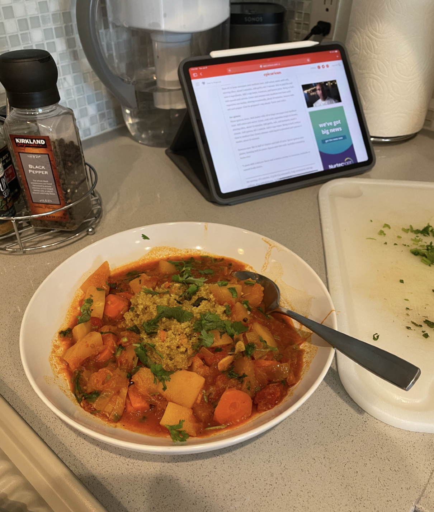

Home
Quinoa with Moroccan Winter Squash & Carrot Stew (vegan)

Description:
A gorgeous, satisfying vegan main course that's easy to make. Quinoa requires no pre-soaking,
so it's as simple to do as rice.
Ingredients:
The Stew
- Olive oil
- 1 chopped yellow onion
- 3 chopped garlic cloves
- 2 tsp paprika
- 1 tsp salt
- 1/2 tsp balck peppers
- 1/2 tsp ground coriander
- 1/2 tsp cumin
- 1/2 tsp tumeric
- 1/2 tsp ginger
- Optional: 1/2 tsp cayenne pepper (very hot)
- 1 - 2 cups of water
- 1 14.5 ounce can diced tomatoes
- 1 lemmon juice
- 1.5 - 2 pounds butternut squash, cut into 1-inch cubes
- 2 cups 3/4 inch cubes carrots
- 1/2 cup chopped cilantro for garnish
- 2 tsp chopped mint for garnish
The Quinoa
- 2 cups quinoa, rinse and drain
- 2 tbsp butter
- 2 tbsp olive oil
- 1 finely chopped yellow onion
- 1/2 cup finely chopped carrot
- 4 minced garlic cloves
- 1 tsp salt
- 1 tsp tumeric
- 3.5 to 4 cups water
Steps:
The Stew
Note: the stew and the quinoa can be made at the same time
- Heat oil in large saucepan, medium heat
- Once heat is hot, add onion and sauté until soft
- Add garlic, stir for 1min
- Mix in salt, paprika, black peppers, ground coriander, cumin, tumeric, ginger, cayenne pepper, stir for 1min
- Add water, tomatoes, lemon juice, and bring it to boil
- Add squash and carrot, then simmer for 30min
- Season with salt and pepper, garnish with half of the cilantro and mint
The Quinoa
- Add butter with oil in saucepan, medium heat
- Add onion and carrot, cook for ~10min until color turned
- Add garlic, tumeric and salt, and stir for 1min
- Add quinoa, and stir for 1min
- Add water and bring to boil, then simmer and cover for additional 15min
In a bowl, add quinoa and form a well and fill with stew, and sprinkle garnish.